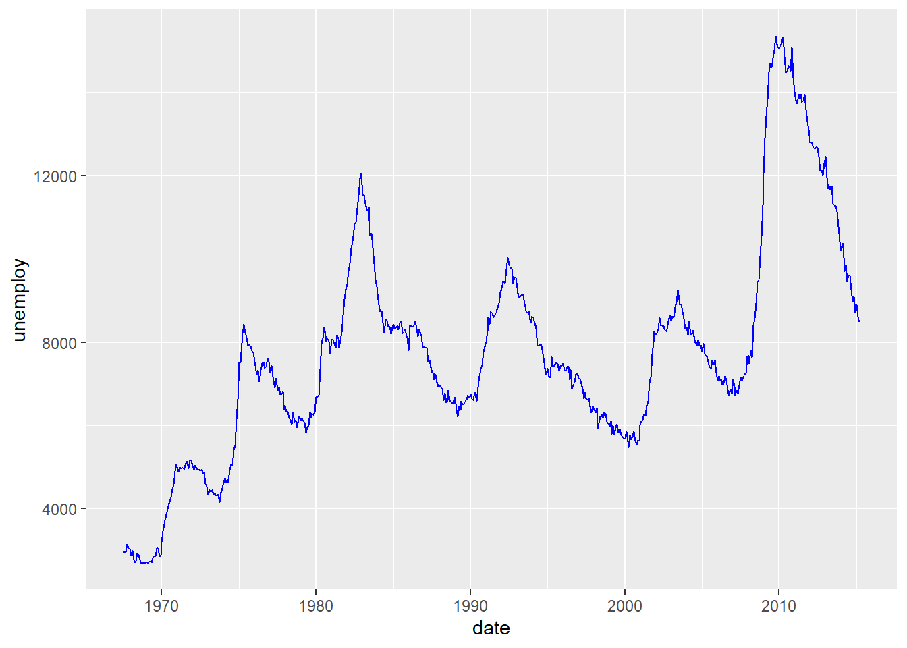

Chapter 7 Data Visualization with ggplot2
7.1 Grammer of Graphics (gg)
We have grammar for languages. We also have grammars for graphcis. That’s where gg of ggplot2 comes from. For ggplot2, it has seven grammatical elements listed in the table below (DataCamp 2019).
| Element | Description |
|---|---|
| Data | The dataset being plotted. |
| Aesthetics | The scales onto which we map our data. |
| Geometries | The visual elements used for our data. |
| Facets | Plotting small multiples. |
| Statistics | Representations of our data to aid understanding. |
| Coordinates | The space on which the data will be plotted. |
| Themes | All non-dataink. |
Let’s take the codes below as a simple example to show how those different elements work in ggplots. From this example, we might have a general idea what is each element and how does it work. If you are still confused, don’t worry about it. We will talk about each element in details later.
library(ggplot2)
data(mtcars)
ggplot(mtcars, # Data
aes(x = mpg, y = wt)) + # Aesthetics
geom_point() + # Geometries
facet_grid(. ~ gear) + # Facets
stat_smooth(method = "lm", se = FALSE, col = "blue") + # Statistics
scale_x_continuous('Miles/(US) gallon',
limits = c(0, 40)) +
scale_y_continuous('Weight (1000 lbs)',
limits = c(0, 7)) + # Coordinates
theme_bw() # Themes
7.2 Data, Aesthetics, and Geometries
Generally, if you want to draw figures with ggplot2, you need at least three elements, which are data, aesthetics, and geometries. Data is the dataset we want to visualize. Aesthetic specifies the variables and related attributes. GEometry indicates the plot type and related attributes. Take the example above again. We want to visualize the varialbes of mpg and wp (aesthetic) of the dataset mtcars (data) with a scatter plot (geometry).
Similar to dplyr, ggplot2 also has its own fashion of coding. We start with the ggplot() function. Please pay attention that there is no 2 in the name of the function. In the function, we first indicate the name of the dataset or data frame. Then we use aes() to indicate the scales we want to map our data. Here, we map mpg to x axis, and wt to y axis. Then we use a plus sign + to connect it to other functions. We are going to draw a scatter plot, we use geom_point().

Well, we could see the result and it is following our codes. Based on this plot, we have a overall idea of the relationship between wt and mpg, which is wt has a negative relationship with mpg. This result makes sense to us. If a car is lighter and it could drive farther with the same amount of gasoline. (Please remember that this relationship is just correlation, not causality.)
We could add attributes in the aesthetic element. For example, we could use color to indicate the value of hp by adding col = hp.

Now we have more information in the result. While the weight is heavier, the hourse power is stronger.
Here, hp is a continous variable, so ggplot2 uses the darkness of the color to indicate the value. However, if we use a categorical varibable (e.g. binomial variable), ggplot2 will use different colors to show different types.
ggplot(mtcars, # Data
aes(x = mpg, y = wt, col = factor(am))) + # Aesthetics
geom_point() # Geometries
Here, am stands for the types of transmission system (0 = automatic, 1 = manual). We use factor() to transfer this variable to a categorical one. Then, the ggplot2 uses one color for automatic transmission and another color for mannual transmission.
Besides color, there are several other parameters to show different aspects of the plots.
| Parameter | Description | Continuous variable | Categorical variable |
|---|---|---|---|
| x | X axis position | ✓ | |
| y | y axis position | ✓ | |
| size | Diameter of points, thickness of lines | ✓ | |
| alpha | Transparency | ✓ | ✓ |
| color | Color of dots, outlines of other shapes | ✓ | ✓ |
| fill | Fill colour | ✓ | ✓ |
| labels | Text on a plot or axes | ✓ | |
| shape | Shape of point | ✓ | |
| linetype | Line dash pa!ern | ✓ |
As for geometries, there are many different types ot them you can use for different plots. For examples, geom_point() for scatter plot, geom_bar for bar plot, geom_boxplot for boxplot, etc. Most functions of geometries are self-explained, so you could tell what their usages easily. We all talk about those commonly used geometries such as sactter plot, bar plot, line plot, etc. in the following parts.
7.2.1 Scatter plot
We use geom_point() to plot scatter plot in R with ggplot2. In the example below, we map mpg to x axis, and wt to y axis. We indicate the transparency by set alpha = hp. The transparency of each point is decided by its value of hp.
7.2.2 Bar plot
In the example below, we draw a bar plot to show the number of cars with different tansmission systems. In aes(), we only indicate the variable am. R then will count the number for each transimission type. We use geom_bar() to plot it.

Go back to our previous example, which is different from the example above.
year <- c(1998:2003) # create variable year
sales <- c(500, 600, 650, 700, 400, 550) # create variable sales
df <- data.frame(year, sales) # combine the variables into one data frame called df
ggplot(df, aes(x = year, y = sales)) +
geom_bar(stat = 'identity') # you need to specify stat = 'identity' to plot the actual value7.2.3 Line plot
To show the usage of line plot in ggplot2, we use a new dataset economics coming from the ggplot2 package. This dataset was produced from US economic time series data. Use help() to check more information of this dataset.
In this example, we use geom_line().
data(economics)
ggplot(economics,
aes(x = date, y = unemploy)) +
geom_line(col = 'Blue') # indicate the color of the line by setting col = 'Blue'
In this plot, it shows clearly the temperol trend of the number of unemployed in the US. There two increase recently starting from 2001 and 2008.
7.2.4 Boxplot
In the example below, we draw a boxplot for each transmission type. To do this, we map am to the x axis, and mpg to the y axis. We use factor() or as.factor() to transfer am to a factor (or categorical variable).

7.2.5 Pie chart
In ggplot2, it is not as intuitive as the base function pie() to draw a pie chart. That’s use the same example to see the difference.
year <- c(1998:2003) # create variable year
sales <- c(500, 600, 650, 700, 400, 550) # create variable sales
df <- data.frame(year, sales) # combine the variables into one data frame called df
ggplot(df, aes(x = '', y = sales, fill = factor(year))) +
geom_bar(width = 1, stat = 'identity') +
coord_polar('y')
What does ggplot2 do here to draw a bar plot is to create a bar plot first.

And then transfer the coordinate system to the polar one.
7.3 Facets
If you want to split up your data by one or more variables and plot each subset in one figure, facet is the element you want to use.
In the following example, we draw a scatter plot for each number of forward gears. In each plot, we map mpg to the x axis and wt to y axis. The three plots are alligned in a row.
data(mtcars)
ggplot(mtcars, # Data
aes(x = mpg, y = wt)) + # Aesthetics
geom_point() + # Geometries
facet_grid(. ~ gear) # Facets, for each number of foward gearsIf we want to allign the plots in a column.
data(mtcars)
ggplot(mtcars, # Data
aes(x = mpg, y = wt)) + # Aesthetics
geom_point() + # Geometries
facet_grid(gear ~ .) # Facets, pay attention to the position of gear and the dot sign
We could put more variables to split the plots. In the following example, we put one more variable vs in the facet_grid().
ggplot(mtcars, # Data
aes(x = mpg, y = wt)) + # Aesthetics
geom_point() + # Geometries
facet_grid(vs ~ gear) # Facets
We could use the margins = T to add more plots showing the aggregation of the plots in each column or row.
ggplot(mtcars, # Data
aes(x = mpg, y = wt)) + # Aesthetics
geom_point() + # Geometries
facet_grid(vs ~ gear, margins = T) # Facets
We could use labeller=label_both to add more information in the label.
ggplot(mtcars, # Data
aes(x = mpg, y = wt)) + # Aesthetics
geom_point() + # Geometries
facet_grid(vs ~ gear, labeller=label_both) # Facets
7.4 Statistics
You could fit a line to see the general trend of the scatter plot by adding stat_smooth().
p <- ggplot(mtcars,
aes(x = mpg, y = wt)) +
geom_point()
p + stat_smooth(method = "lm") # linear line
You could use also use draw a histogram for the dataset.

You could fit a denisty line for the histogram.
p + geom_histogram(aes( y = ..density..), binwidth = 3, col = 'Black', fill = 'White') +
geom_density(alpha=.2, fill="Gray") Another way to show more statistics about your data is boxplot, which we have been introduced before.
7.5 Coordinates
While there are many coordinate systems supported by ggplot2, the most commonly used is Cartesian coordinate system, which is the combination of x axis and y axis orthogonally.
7.5.1 Zooming in and out
In the following example, we zoom in our plot to a spcific area.
data(mtcars)
p <- ggplot(mtcars, aes(x = mpg, y = wt)) +
geom_point()
p + coord_cartesian(xlim = c(10, 30), ylim = c(2,4))
7.5.2 Ratio
We could change the ratio of the length of a y unit relative to the length of a x unit (\(\frac{\text{y unit}}{\text{x unit}}\)).


7.5.3 Swaping the axes


7.5.4 Polar coordinate system
We touched the polar coordinate system a little bit when drawing a pie chart.
ggplot(mtcars, aes(factor(gear))) +
geom_bar(width = 1, col = 'Black', fill = 'Grey') +
coord_polar()
7.6 Themes (Updating)
ggplot2 is powerful in its flexibility of themes.

References
DataCamp. 2019. “Data Visualization with Ggplot2.” November 3, 2019. https://www.datacamp.com/courses/data-visualization-with-ggplot2-1.